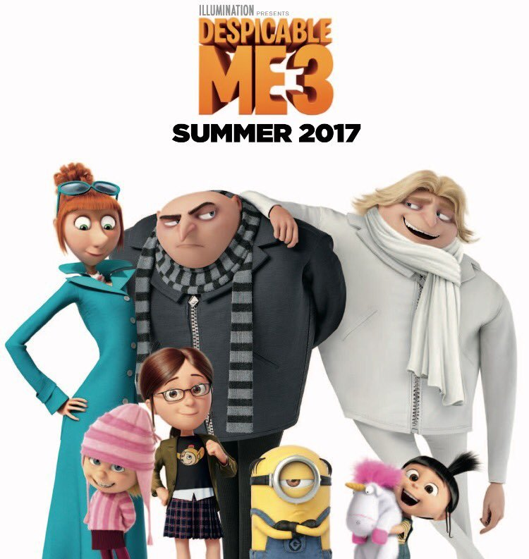

슈퍼배드3
| 네티즌 평점 |
관람객 평점 |
평론가 평점 |
| 8.69 |
8.76 |
5.00 |
시놉시스
전 세계를 점령할 놈들이 온다!
최고의 악당만을 보스로 섬기는 ‘미니언’ 가족을 위해 악당 은퇴를 선언한 ‘그루’
그루의 배신에 실망한 미니언들은 스스로 악당이 되기 위해 그루를 떠난다.
한편, 같은 얼굴 다른 스펙의 쌍둥이 동생 ‘드루’의 등장으로 인해 그루는 자신이 역사상 가장 위대한 악당 가문의 후예임을 알게 되고,
거부할 수 없는 슈퍼배드의 운명을 따르게 되는데…
돌아온 그루와 미니언들은 다시 함께할 수 있을까?
영화정보
개봉일:
감독 : aaaaaaa
배우 :
장르 :
상영 여부 :
상영시간 :
관람객 평점 :
전문가 평점 :
예매율:
예매율 순위 :